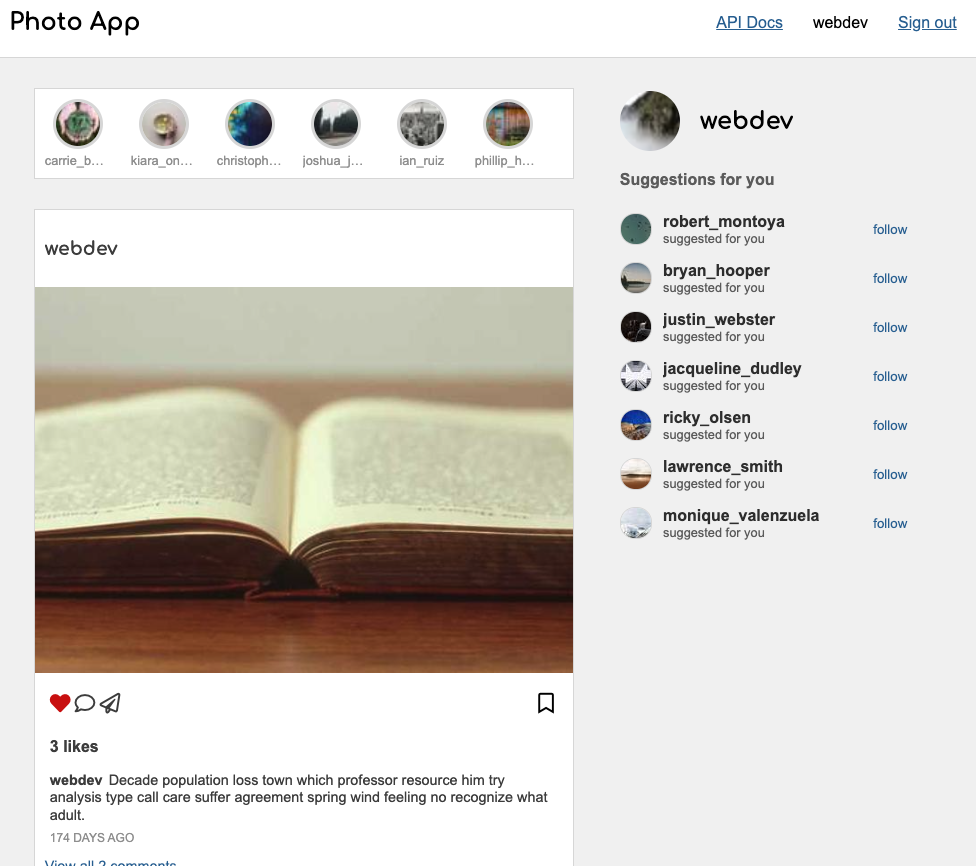

Recent Projects
Photo App

A course project from CS 396 based on Python Flask.
The photo app is a photo and video sharing social networking service. It could be seens as a prototype of Instagram web version. It shares the similar feature as Instragram, for example, follow/unfollow users, like/unlike posts, comment/uncomment posts and create/delete posts. It also has recommended users bar at top for users to explore their social networks.
Click for details.
The photo app is a photo and video sharing social networking service. It could be seens as a prototype of Instagram web version. It shares the similar feature as Instragram, for example, follow/unfollow users, like/unlike posts, comment/uncomment posts and create/delete posts. It also has recommended users bar at top for users to explore their social networks.
Click for details.
Basic music player

It is a basic music player using Javascript, HTML, and CSS. It consists of a new page that will serve as the music player interface, a javascript file where you will implement the necessary functionality, a new page with album select screen and a song select screen that lists 10 songs from an album.